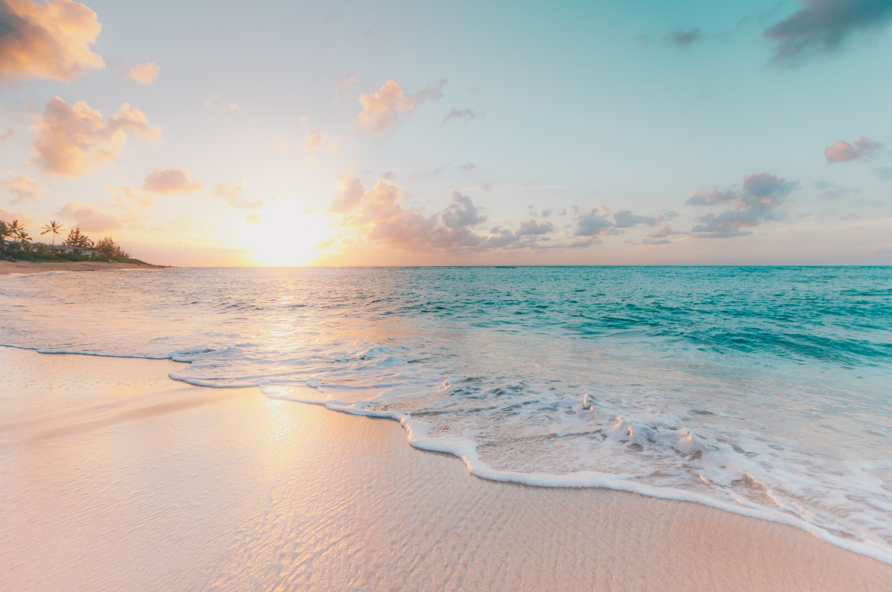

-

Barcelona
From architectural wonders to world-class art, Barcelona is a must for any travel bucket list. And beyond the fascinating history, culture, and art… comes the amazing food and lifestyle. This city is a place where you can beach by day and drink and dine on cava and tapas into the night. The city appears to have easy accessibility, pleasant weather, tasty local cuisine, attractive beaches and mountains, and remarkable cultural heritage.
-

Hawaii
Hawaii is known for its beautiful beaches, its laid-back lifestyle, and its delicious food. From traditional Hawaiian dishes like poi and laulau to modern favorites like poke and Kalua pig, you are in for a treat after exploring the mountains or surfing the waves. Much more than spectacular sunsets, beautiful beaches and wordclass surfing, the Hawaiian culture influences everything from language and religion to fashion and cuisine.
-

London
This great world city is far more than just the capital of the United Kingdom of Great Britain and Northern Ireland. London is bustling, vibrant, multicultural and cosmopolitan. London is famous for Big Ben, Buckingham Palace, British Museum, and Tower Bridge. It is also known for its rich history, double-decker buses, red phone booths, world-class museums and galleries, gigantic lush parks, financial districts, and cosmopolitan vibes.
London hosts all kinds of attractions that suit all sorts of preferences, and there's always something interesting going on in the city. It hosts a grand number of attractions, museums, cultural exhibits and adventures, and there's no reason to get bored, irrespective of how long you plan to live here.
-

Miami
Miami is famous for its pristine beaches, non-stop nightlife, and fantastic warm weather. It is also known for its mind-blowing skyline, luxurious shopping malls, Art Deco architecture, and high-end hotels. Miami Beach offers a variety that goes far beyond sun and sand.
-

Munich
A city with a big heart, as suave as it is easygoing, buzzing and yet tranquil. Munich is known as Germany's lifestyle capital. And on top of all this, it boasts one of the country's most beautiful squares: Marienplatz, at the heart of the city and home to the Old and New Town Halls.
-

New York City
New York is a city of diversity and dynamism. It is also a city of politics, economy and culture. It is even described as the economic and cultural capital of the world, and New York City is one of the most populous cities in the United States. Major destinations include the Empire State Building, the Statue of Liberty, Central Park, Times Square, etc.
-

Paris
Paris is one of the most beautiful cities in the world. It has a reputation of being a romantic and cultural city. The city is also known for its high-quality gastronomy and the terraces of its cafés. Europe's most enchanting city, Paris is known for its many monuments, especially the Eiffel Tower, Notre-Dame Cathedral, Opéra Garnier, etc.
-

Sydney
Sydney is a vibrant city known for its yacht-studded harbour, superb beaches, and the iconic Opera House with its towering sail structure. Sydney has grown into Australia's most diverse and cosmopolitan city with an exciting food, arts and entertainment scene. Sydney is most famous for: Sydney Harbour Bridge. The World Heritage-listed Blue Mountains has some of the best hikes in Australia; the beautiful Hunter Valley is a hot spot for foodies; and Canberra, the nation's capital, is only a three-hour drive away.
-

Tokyo
Tokyo is the administrative, cultural, financial, commercial, and educational centre of Japan and the focus of an extensive urban complex that includes Kawasaki and Yokohama. Attractions include the Imperial Palace, encircled by stone-walled moats and broad gardens, and numerous temples and shrines. The main tourist attractions in Tokyo are the Tokyo Skytree, Tokyo Tower, the shopping districts of Harajuku and Shibuya, the traditional Meiji and Sensoji Shrines, and of course, the cherry blossom flowers in April.
-

Bali
Bali, the famed Island of the Gods, with its varied landscape of hills and mountains, rugged coastlines and sandy beaches, lush rice terraces, and volcanic hillsides all providing a picturesque backdrop to its colorful, deeply spiritual, and unique culture stakes a serious claim to be paradise on earth. Glorious mountainous areas with lush greenery, scenic lakes, gorgeous waterfalls, iconic rice fields, flower gardens, gushing sacred rivers and secret canyons all make up the island's landscape.